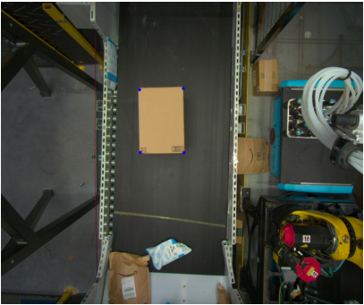
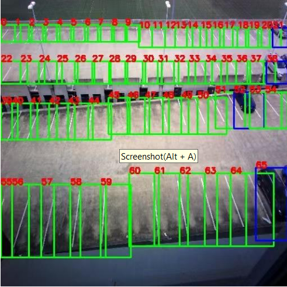

Kelin Yu
Email: kyu85 [at] umd [dot] edu
Google Scholar
Github
I am an incoming Ph.D. student in Computer Science at University of Maryland, where I will work with
Prof. Ruohan Gao.
I am interested in MultiSensory Robot Learning and Robot Manipulation.
I received my master's degree in Computer Science at Georgia Tech in May 2024, advised by
Ph.D. mentor Yunhai Han,
Prof. Ye Zhao and
Prof. Danfei Xu.
Previously, I obtained dual bachelor's degree in Electrical Engineering and Mathematics from Georgia Tech in 2022 and
was a Robotics Software Engineering intern at Amazon.
I'm open to discussions and collaborations, so feel free to drop me an email if you are interested.
Publications
(* indicates equal contribution)
Kelin Yu*,
Yunhai Han*,
Qixian Wang,
Vaibhav Saxena,
Danfei Xu
Ye Zhao,
NeurIPS Touch Processing Workshop 2023 ( Best Paper Award ) / CoRL Deployable Workshop 2023 / Paper / Website / In Submission
We introduce MimicTouch, a novel framework for learning policies directly from demonstrations provided by human users with their hands. The key innovations are i) a human tactile data collection system which collects multi-modal tactile dataset for learning human's tactile-guided control strategy, ii) an imitation learning-based framework for learning human's tactile-guided control strategy through such data, and iii) an online residual RL framework to bridge the embodiment gap between the human hand and the robot gripper. Through comprehensive experiments, we highlight the efficacy of utilizing human's tactile-guided control strategy to resolve contact-rich manipulation tasks.https://sites.google.com/view/continuallearningEmpowering Continual Robot Learning through Guided Skill Acquisition with Large Language Models
Kelin Yu*, Zhaoyi Li*, Shuo Cheng*, Danfei Xu
ICLR AGI Workshop 2024 / ICLR LLMAgent Workshop 2024 / Website / In Submission
We introduce a novel approach called evolutionary curriculum training to tackle these challenges. The primary goal of evolutionary curriculum training is to evaluate the collision avoidance model's competency in various scenarios and create curricula to enhance its insufficient skills. The paper introduces an innovative evaluation technique to assess the DRL model's performance in navigating structured maps and avoiding dynamic obstacles. Additionally, an evolutionary training environment generates all the curriculum to improve the DRL model's inadequate skills tested in the previous evaluation. We benchmark the performance of our model across five structured environments to validate the hypothesis that this evolutionary training environment leads to a higher success rate and a lower average number of collisions.Learning Generalizable Vision-Tactile Robotic Grasping Strategy for Deformable Objects via Transformer
Yunhai Han*, Kelin Yu*, Rahul Batra, Nathan Boyd, Chaitanya Mehta, Tuo Zhao, Yu She, Seth Hutchinson, Ye Zhao
Transactions on Mechatronics / Paper / Code
Reliable robotic grasping with deformable objects remains a challenging task due to underactuated contact interactions with a gripper, unknown object dynamics, and variable object geometries. In this study, we propose a Transformer-based robot grasping framework for rigid grippers that leverage tactile information from a GelSight sensor for safe object grasping. The Transformer network learns physical feature embeddings from visual & tactile feedback and predict a final grasp through a multilayer perceptron (MLP) with grasping strength. Using these predictions, the gripper is commanded with an optimal force for safe grasping tasks.Evolutionary Curriculum Training for DRL-Based Navigation Systems
Kelin Yu*, Max Asselmeier*, Zhaoyi Li*, Danfei Xu
RSS MultiAct Workshop 2023 / Website / Paper /
To support daily human tasks, robots need to tackle intricate, long-term tasks and continuously acquire new skills to handle new problems. Deep reinforcement learning (DRL) offers potential for learning fine-grained skills but relies heavily on human-defined rewards and faces challenges with long-horizon tasks. Task and Motion Planning (TAMP) are adept at handling long-horizon tasks but often need tailored domain-specific skills, resulting in practical limitations and inefficiencies. To address these challenges, we developed LG-SAIL (Language Models Guided Sequential, Adaptive, and Incremental Robot Learning), a framework that leverages Large Language Models (LLMs) to harmoniously integrate TAMP and DRL for continuous skill learning in long-horizon tasks. Our framework achieves automatic task decomposition, operator creation, and dense reward generation for efficiently acquiring the desired skills. To facilitate new skill learning, LG-SAIL maintains a symbolic skill library and utilizes the existing model from semantic-related skills to warm start the training. Our method, LG-SAIL, demonstrates superior performance compared to baselines across four challenging simulated task domains. Furthermore, we demonstrate the ability to reuse learned skills to expedite learning in new task domains.Temporal Video-Language Alignment Network for Reward Shaping in Reinforcement Learning
Kelin Yu*, Ziyuan Cao*, Reshma Ramachandra*
Technical Report 2022 / Paper /
Designing appropriate reward functions for Reinforcement Learning (RL) approaches has been a significant problem. Utilizing natural language instructions to provide intermediate rewards to RL agents in a process known as reward shaping can help the agent in reaching the goal state faster. In this work, we propose a natural language-based reward-shaping approach that maps trajectories from Montezuma's Revenge game environment to corresponding natural language instructions using an extension of the LanguagE-Action Reward Network (LEARN) framework. These trajectory-language mappings are further used to generate intermediate rewards which are integrated into reward functions that can be utilized to learn an optimal policy for any standard RL algorithms.Work Experience

Robotics Software Engineering intern
Amazon Robotics AI /
Designed and built Calibration Drift Detector for our Industrial manipulator with Python, Open3D, OpenCV, and machine learning classifier.
Each multi-pick detected as a single pick costs 12$, and MEP/DEP package costs $0.05. My system saves potential thousands of dollars every day.
Used AWS tool (S3) to get past images and point clouds and implemented advanced computer vision algorithms and applied ML classifier to detect calibration drift.
Projects

iValet An Intelligent Parking Lot Management System and Interface
Kelin Yu*,
Faiza Yousuf*,
Wei Xiong Toh*,
Yunchu Feng*,
Senior Design 2022 /
Website /
The iValet intelligent parking lot management system automatically directs drivers to the nearest vacant parking spot upon entering a crowded parking lot. The system consists of a camera, machine learning development board, a PostgreSQL server, and a user interface (web application). The camera is used to take photos of the entire parking lot, the development board runs segmentation and classification algorithms on those photos, the SQL server contains data about each parking spot that is written to by the image processing models, a path-planning algorithm, and the UI, while the web application shows end users the directions to the empty parking spots based on the location of the parking lot entrance.
Teaching Experience
CS 4476/6476, Computer Vision, Georgia Tech,
Fall 2023, Spring 2023, Fall 2022
ECE 3741, Instrumentation and Electronics Laboratory, Georgia Tech,
Spring 2021
Robotics Software Engineering intern
Amazon Robotics AI /
Designed and built Calibration Drift Detector for our Industrial manipulator with Python, Open3D, OpenCV, and machine learning classifier. Each multi-pick detected as a single pick costs 12$, and MEP/DEP package costs $0.05. My system saves potential thousands of dollars every day. Used AWS tool (S3) to get past images and point clouds and implemented advanced computer vision algorithms and applied ML classifier to detect calibration drift.iValet An Intelligent Parking Lot Management System and Interface
Kelin Yu*, Faiza Yousuf*, Wei Xiong Toh*, Yunchu Feng*,
Senior Design 2022 / Website /
The iValet intelligent parking lot management system automatically directs drivers to the nearest vacant parking spot upon entering a crowded parking lot. The system consists of a camera, machine learning development board, a PostgreSQL server, and a user interface (web application). The camera is used to take photos of the entire parking lot, the development board runs segmentation and classification algorithms on those photos, the SQL server contains data about each parking spot that is written to by the image processing models, a path-planning algorithm, and the UI, while the web application shows end users the directions to the empty parking spots based on the location of the parking lot entrance.